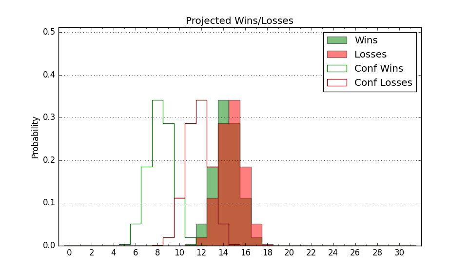

| Home | Game Probabilities | Conferences | Preseason Predictions | Odds Charts | NCAA Tournament |
| City: | Honolulu, Hawaii | |
| Conference: | Big West (7th)
| |
| Record: | 5-8 (Conf) 11-11 (Overall) | |
| Ratings: | Comp.: -1.7 (187th) Net: -1.6 (183rd) Off: 104.9 (189th) Def: 106.4 (182nd) SoR: 0.0 (128th) |
| Remaining | ||||||
|---|---|---|---|---|---|---|
| Date | Opponent | Win Prob | Pred. | |||
| 2/14 | Long Beach St. (303) | 85.6% | W 74-63 | |||
| 2/16 | UC Irvine (69) | 27.7% | L 65-72 | |||
| 2/22 | @ UC San Diego (52) | 7.7% | L 61-78 | |||
| 2/28 | UC Riverside (159) | 60.6% | W 72-69 | |||
| 3/2 | UC Davis (208) | 69.3% | W 68-63 | |||
| 3/6 | @ Cal St. Bakersfield (262) | 54.6% | W 71-70 | |||
| 3/8 | @ Cal St. Northridge (116) | 22.2% | L 70-79 | |||
| Previous | Game Score | |||||
| Date | Opponent | Win Prob | Result | Off | Def | Net |
| 11/10 | San Jose St. (155) | 57.7% | W 80-69 | 12.6 | -10.0 | 2.6 |
| 11/12 | Pacific (285) | 83.2% | W 76-66 | -1.1 | 1.9 | 0.8 |
| 11/17 | Weber St. (289) | 83.6% | W 73-68 | -14.6 | 3.9 | -10.7 |
| 11/23 | North Carolina (46) | 18.6% | L 69-87 | 2.1 | -7.6 | -5.5 |
| 12/3 | @Grand Canyon (89) | 16.0% | L 72-78 | -0.6 | 4.4 | 3.8 |
| 12/7 | @Long Beach St. (303) | 63.6% | L 68-76 | -5.4 | -14.0 | -19.3 |
| 12/14 | Tex A&M Corpus Chris (167) | 62.3% | W 71-62 | 3.1 | 10.7 | 13.8 |
| 12/22 | Charlotte (253) | 77.8% | W 78-61 | 4.2 | 7.0 | 11.2 |
| 12/23 | Nebraska (47) | 19.3% | L 55-69 | -7.7 | -0.1 | -7.8 |
| 12/25 | Oakland (217) | 71.5% | W 73-70 | -4.4 | 2.8 | -1.7 |
| 1/2 | UC Santa Barbara (126) | 51.7% | L 61-64 | -2.5 | 2.4 | -0.0 |
| 1/4 | Cal Poly (225) | 73.2% | W 68-55 | -5.2 | 18.3 | 13.0 |
| 1/9 | @UC Riverside (159) | 31.1% | W 83-76 | 17.5 | 6.5 | 24.0 |
| 1/11 | @Cal St. Fullerton (313) | 67.4% | W 95-86 | 23.9 | -18.6 | 5.3 |
| 1/16 | Cal St. Northridge (116) | 49.3% | L 60-83 | -14.0 | -23.0 | -37.0 |
| 1/18 | Cal St. Bakersfield (262) | 80.4% | W 81-70 | 5.4 | 3.2 | 8.6 |
| 1/23 | @UC Davis (208) | 39.9% | L 66-68 | 8.9 | -5.0 | 4.0 |
| 1/25 | @UC Irvine (69) | 10.1% | L 55-71 | -11.2 | 11.8 | 0.6 |
| 1/30 | UC San Diego (52) | 22.2% | L 63-74 | 1.4 | -4.0 | -2.6 |
| 2/1 | Cal St. Fullerton (313) | 87.6% | W 82-57 | 0.7 | 9.9 | 10.6 |
| 2/6 | @Cal Poly (225) | 44.5% | L 63-79 | -12.1 | -8.6 | -20.7 |
| 2/8 | @UC Santa Barbara (126) | 23.9% | L 72-76 | 0.3 | 6.1 | 6.4 |
| Stats & Trends | |||||
|---|---|---|---|---|---|
| Current | Day | Week | Month | Season | |
| Composite | -1.7 | -0.1 | -0.9 | -1.4 | +4.9 |
| Comp Rank | 187 | -3 | -19 | -22 | +42 |
| Net Efficiency | -1.6 | -0.1 | -1.0 | -2.6 | -- |
| Net Rank | 183 | -- | -17 | -34 | -- |
| Off Efficiency | 104.9 | -0.0 | -0.7 | +0.5 | -- |
| Off Rank | 189 | -1 | -6 | -3 | -- |
| Def Efficiency | 106.4 | -0.1 | -0.3 | -3.1 | -- |
| Def Rank | 182 | -- | -1 | -39 | -- |
| SoS Rank | 213 | -6 | +28 | +56 | -- |
| Exp. Wins | 14.3 | -0.0 | -0.8 | -1.7 | -1.5 |
| Exp. Conf Wins | 8.3 | -0.0 | -0.8 | -1.7 | -2.6 |
| Conf Champ Prob | 0.0 | -- | -- | -0.1 | -4.1 |

| Advanced Stats | ||
|---|---|---|
| Stat | Value | Rank |
| Off Eff FG % | 0.521 | 126 |
| Off Ast Ratio | 0.135 | 239 |
| Off ORB% | 0.311 | 116 |
| Off TO Rate | 0.182 | 348 |
| Off FT Ratio | 0.412 | 26 |
| Def Eff FG % | 0.489 | 110 |
| Def Ast Ratio | 0.121 | 33 |
| Def ORB% | 0.245 | 37 |
| Def TO Rate | 0.114 | 353 |
| Def FT Ratio | 0.332 | 182 |